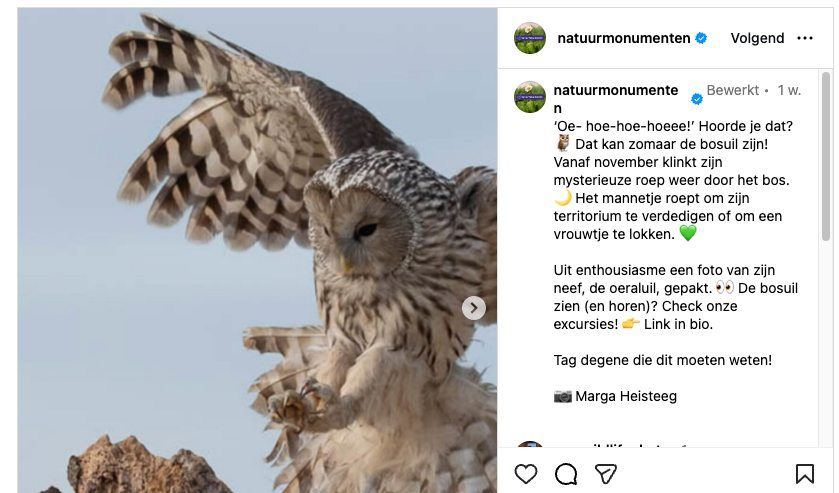

Oeraluil, geen bosuil
22 november 2025 · Natuurmonumenten
- Op de foto
- Oeraluil
- Het ging over
- Bosuil
Aangepast. Natuurmonumenten heeft de tekst inmiddels aangepast.

Bosuil en Oeraluil, het blijft voor de meeste bedrijven erg lastig om het verschil tussen beide soorten te zien.
@natuurmonumenten heeft het in de tekst inmiddels aangepast.